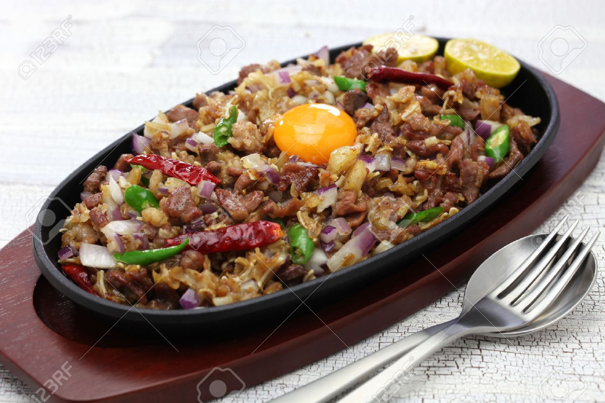

|

|
Description
Sisig is a Filipino dish made from parts of pig head and chicken liver, usually seasoned with calamansi, onions and chili peppers. Sisig was first mentioned in a Kapampangan dictionary in the 17th century meaning "to snack on something sour" and "salad".
Ingredients
2 pounds pig face (snouts, ears, and jowls)
1 cup vinegar
1/4 cup soy sauce
1 head garlic, peeled and crused
1 teaspoon whole peppercorns
2 bay leaves
1 tablespoon salt
water
1 large onion, peeled and diced
6 Thai chili peppers, stemmed and minced
1/2 cup calamansi juice
1 tablespoon Liquid seasoning (I used Maggi)
1/2 cup liver spread
Procedure
1. In a large pot, combine pig face, vinegar, soy sauce, garlic, peppercorns, bay leaves, 2 tablespoons of salt, and enough water to completely cover pork.
2. Bring to a boil, skimming scum that floats on top. Lower heat, cover, and simmer for about 50 minutes to 1 hour or until meat is tender. Remove from heat and drain well, discarding liquid.
3. Over hot coals, grill pork for about 7 to 10 minutes on each side or until crisp and slightly charred. Or arrange in a single layer on a baking sheet and broil in a 450 F oven for about 4 to 5 minutes or until nicely charred.
4. Remove from heat, allow to cool to touch, and chop meat.
5. In a large bowl, combine chopped meat, onions, chili peppers, calamansi juice., and liquid seasoning.
6. And liver spread and gently stir to combine. Season with salt and pepper to taste.
7. To serve, transfer to sizzling hot plates.
Price
P50 / serving
|